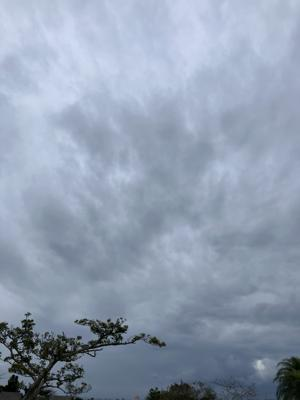
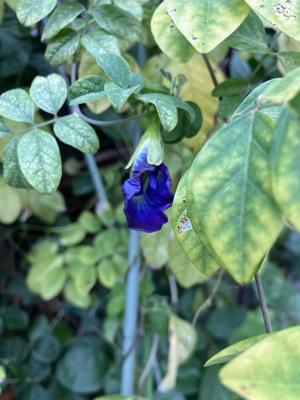

うるがいの話 ある日
最新: バタフライピーの初花【うるがいの話 ある日】とは 一日だけのプログです
『うるがいの話』の最新一日だけのプログで、通信料が少なく経済的だ。カニの画像をクリックすると全ての日付が載る『うるがいの話』サイトを表示します
|
|
【うるがいの話】 うるがい(ｳﾙｶﾞｲ urugai)とは、『もずくがに』の名前でとても大きくなります。 |
|---|---|
|
|
【カミマヤーの話】 猫のことを方言でマヤーといいます。カミマヤー（kamimayaa）とは、神の猫のことです。 |
|
【たながぁの音楽】 たながぁ（ﾀﾅｶﾞｰ tanagaa）とは手長えびのことで、何種類かあり大きいのは車 エビぐらいになります。 |

|
【ぶながぁの話】 ぶながぁ(ﾌﾞﾅｶﾞｰ bunagaa)とは、赤い髪の毛、赤い身体、そして身長は１ｍ２０ｃｍ ぐらい、川の蟹を食べているの目撃された。場所は沖縄県国頭郡大宜味村のと ある村僕の隣近所に住んでいる爺さんから、聞いた話です。 |
|
|
【ギーマの話】 ギーマ(giima)とは、山原の里山に咲くスズランに似た、 花を付けます。実は食べられます、 気が付くと口の周りが紫になっています。 |
2026年03月10日 (火）バタフライピーの初花
15:45

昨日、夕方ジョギンギに行くとき表玄関の日当たりの良い場所に
置いてあるバタフライピーに、花が咲いた後があった。ここ数日
は、寒さが戻ってきたのだが、先週の金曜日がかなり暑かったか
らか、今年初めての花が咲いていた（花は既にしぼんでいた）。

バタフライピーの花は、自家製は１月１３日で無くなり、いまは
アマゾンで注文したものを使用している。
アンソロピックが米国防総省を提訴、供給網リスクの指定巡り
トランプ大統領はアンソロピックが要求を拒否したことを非難。
政府機関に対し、同社のAIツール「クロード（Claude）」の使
用停止を指示していた。
アンソロピックはサプライチェーン上のリスクに指定された後、
「クロードに対する前例のない需要が見られる」と明らかにして
いた。同社が軍事AI利用の制限を巡り、政府に抵抗していること
を支持する動きとみられる。
私も、クロードのアカウントを作成、ディスクトップ版をインス
トールした。初の利用は『こんにちは』と会話だけでした。